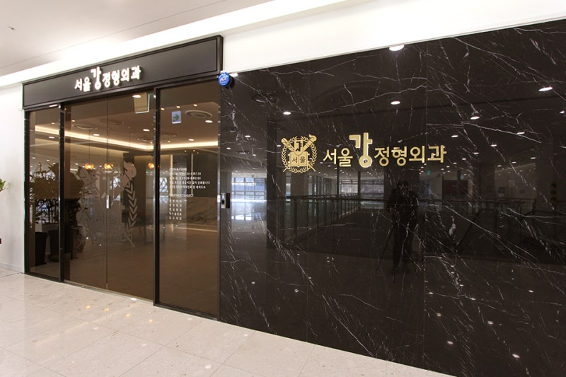
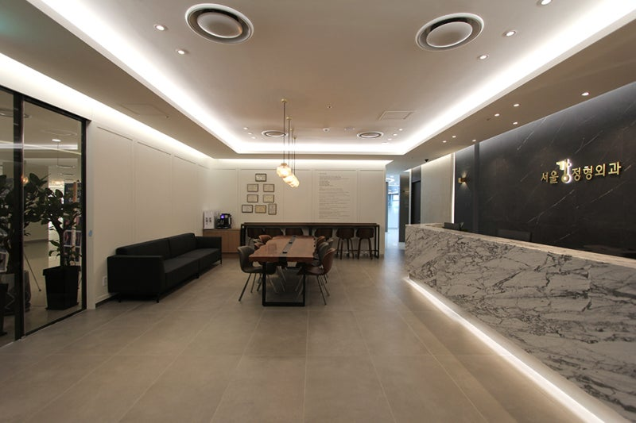
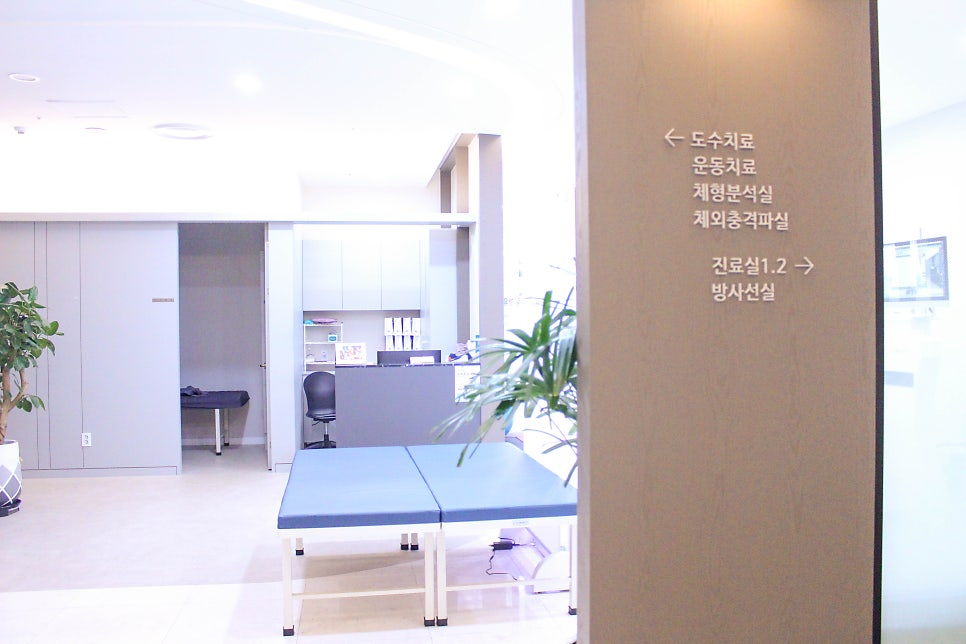
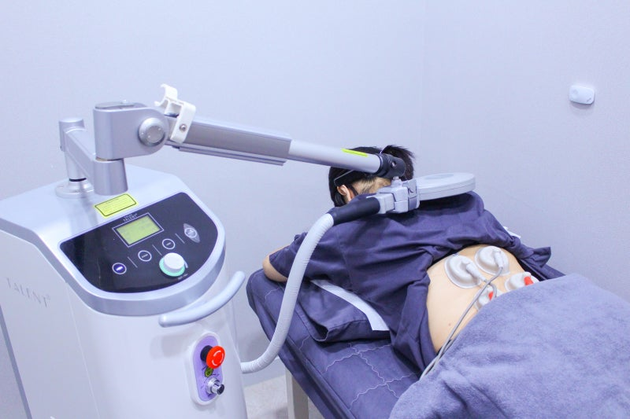
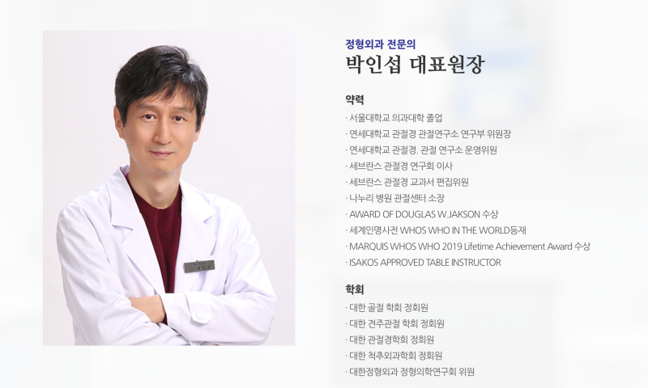
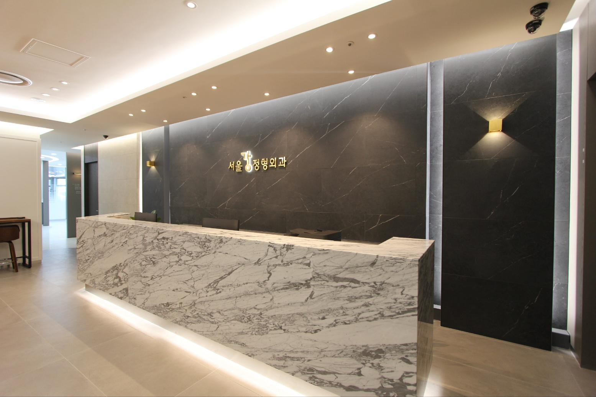
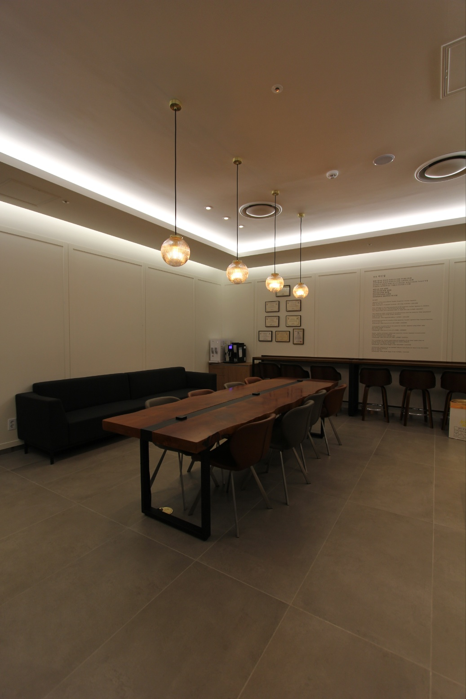
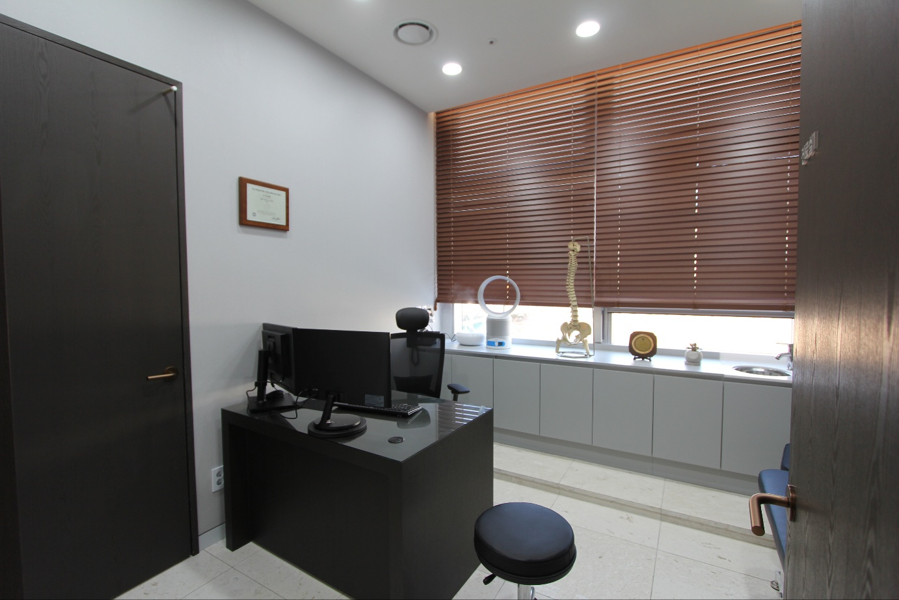
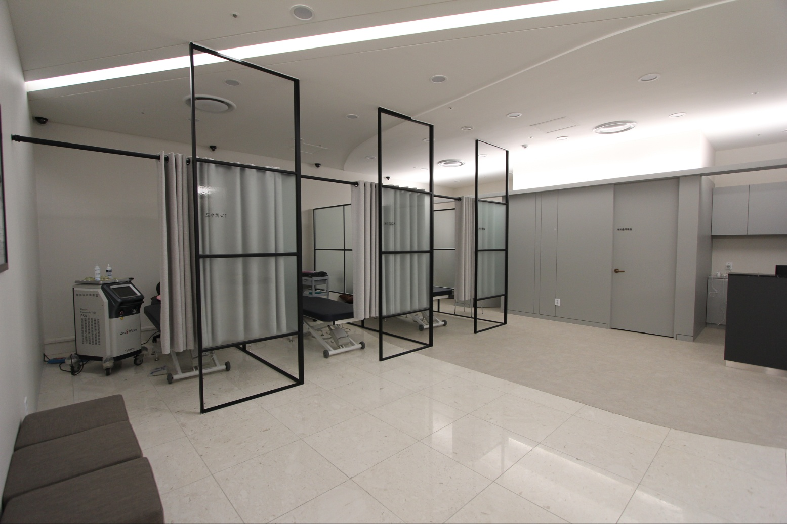
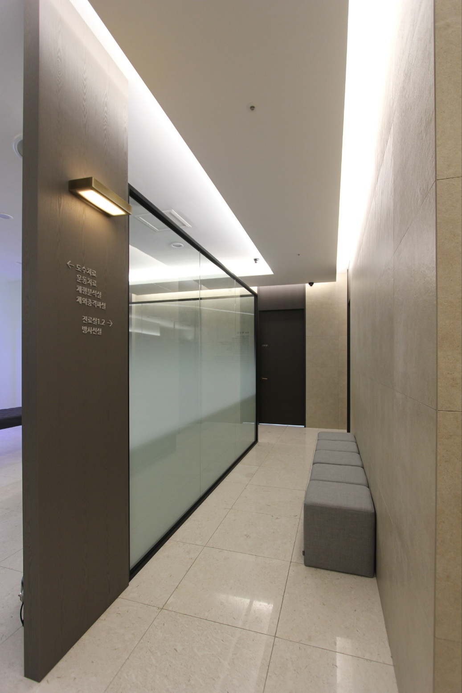

판교역 2번 출구 · 정형외과 전문의 진료
체계적인 1:1 맞춤치료 시스템과 독일 WOLF 체외충격파(ESWT) 등 첨단 의료장비로 어깨·무릎·척추 통증을 치료합니다.




ABOUT
안녕하십니까? 서울강정형외과 대표원장 박인섭입니다.
저희 병원은 체계적인 1:1 맞춤치료 시스템, 질환의 근본적인 치료,
첨단 의료장비를 통한 차별화된 의료시설, 그리고 환자 중심의 동선과
편안한 인테리어를 갖추고 있습니다.
첨단 의료장비와 환자 중심 동선을 갖춘 쾌적한 진료 환경을 제공합니다.
풍부한 임상경험을 갖춘 정형외과 전문의가 직접 진료합니다.
정밀 진단을 바탕으로 환자에게 꼭 맞는 치료를 처방합니다.
TREATMENT
독일 WOLF사의 체외충격파 치료(ESWT)로 수술 없이 근·골격계 통증을 치료합니다.
강력한 초음파인 충격파(Shock Wave)를 발생시키는 치료기를 사용하여, 외과적 수술 없이 체외에서 근·골격계의 통증을 치료하는 최신 치료법입니다. 지속적인 임상연구를 통해 건염, 석회성건초염, 족저근막염, 테니스엘보, 근막통증증후군 등에서 우수한 효과가 입증되었습니다.
체외충격파 치료의 효과는 국제 학술지에 게재된 무작위 대조 임상연구(RCT)를 통해 입증되었습니다.
에너지를 한 점에 모아 통증의 원인 부위를 정확히 타겟팅합니다.
표면에 머무는 방사형과 달리 깊은 병변까지 충격파가 도달합니다.
독일 WOLF사의 장비로 일정하고 정밀한 에너지를 전달합니다.
| 구분 | 일반 방사형(Radial) | 독일 WOLF 집속형(Focused) |
|---|---|---|
| 에너지 전달 | 표면에 넓게 분산 | 병변 부위에 집중 |
| 침투 깊이 | 비교적 얕음 | 깊은 부위까지 도달 |
| 치료 정밀도 | 넓은 범위 자극 | 통증 원인 부위 타겟팅 |
연어에서 추출한 PDRN(폴리데옥시리보뉴클레오타이드) 성분을 이용해 손상된 조직의 재생과 회복을 돕고 염증과 통증을 완화하는 주사 치료입니다.
약해지거나 손상된 인대 · 힘줄 부착부에 증식 유도 물질을 주사하여, 조직을 자극해 튼튼하게 강화 · 재생시키는 비수술 통증 치료입니다.
특수진료장비 · 초음파영상진단기 2대 보유 · 정형외과 전문의 1인 진료
DOCTOR

정형외과 전문의
박인섭 대표원장이 국제 학술지에 발표한 무릎 관절경 · 인대 분야 연구입니다.
Peel-off injury at the tibial attachment of the posterior cruciate ligament in children
PubMed ↗New meniscus repair technique for peripheral tears near the posterior tibial attachment of the posterior horn of the medial meniscus
PubMed ↗Arthroscopic fixation of avulsion of the posterior cruciate ligament from femoral insertion
PubMed ↗Arthroscopic reconstruction of the posterior cruciate ligament using tibial-inlay and double-bundle technique
PubMed ↗Double-bundle technique: endoscopic posterior cruciate ligament reconstruction using tibialis posterior allograft
PubMed ↗New technique for chronic posterolateral instability of the knee: posterolateral reconstruction using the tibialis posterior tendon allograft
PubMed ↗Arthroscopic resection for the unstable inferior leaf of anterior horn in the horizontal tear of a lateral meniscus
PubMed ↗Agenesis of the posterolateral bundle of anterior cruciate ligament
PubMed ↗FACILITIES
환자 중심의 동선과 편안한 인테리어로 쾌적한 진료 환경을 갖추었습니다.





LOCATION
경기도 성남시 분당구 분당내곡로 117,
그레이츠 판교 3층 306호 (백현동)
신분당선 판교역 2번 출구
| 평일 (월~금) | 09:30 ~ 19:00 |
|---|---|
| 토요일 | 09:30 ~ 14:00 |
| 일요일 · 공휴일 | 휴진 |